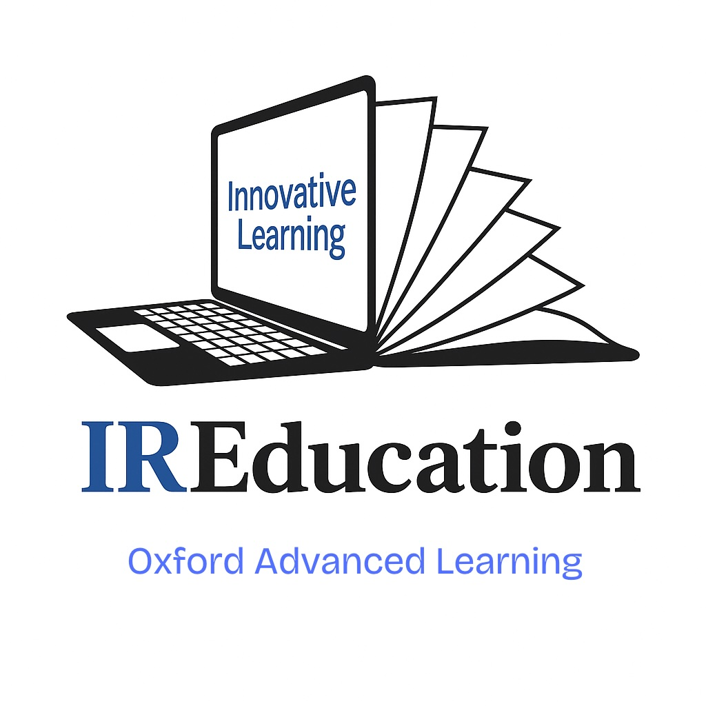

Transforming Education Through Innovation, AI, and Academic Excellence
IREducation (InteRactive Education) is an innovative education company based in Hong Kong and China, operating in the UK under Oxford Advanced Learning. We are building a complete ecosystem that redefines the way students, teachers, and institutions engage with education.
With a strong focus on Mathematics, Sciences, and university preparation, our long-term vision is to become the leading educational corporation in the UK — an all-encompassing “educational emporium” offering tools for students, teachers, and institutions.
We aim to develop and deploy a suite of AI-driven tools, state-of-the-art digital platforms, and high-quality curricular content aligned with national standards. This initiative is designed not only to fill current educational gaps but to anticipate and shape the future of learning through innovation, accessibility, and academic excellence.
The IR Series includes subject-specific platforms starting with IRMaths, launching September 2025 with full alignment to the Edexcel A-Level syllabus. Future platforms include IRChemistry and IRPhysics.
Launching in 2026, IR-AI is an intelligent tutor capable of adapting to each student's learning style, pace, and goals. With advanced natural language processing and reinforcement learning, it offers:
Preview the IRMaths Tutor prototype: Try the Demo
Our Teacher Applicational Platform (TAP) addresses inefficiencies in educator recruitment. Teachers create unified profiles while schools can filter and recruit with precision. Launching August 2025, TeacherSearch will:
We are producing the UK's first Edexcel A-Level Statistics textbook, due October 2025. All textbooks will integrate with our platforms and feature:
Our tutoring programme (Y9–Y13) will include:
This service will be integrated into our core platform and offered under premium tiers.
To partner with us, request a demo, or join our platform, please get in touch:
Email: ireducationinc@gmail.com
Locations: Hong Kong | Mainland China | United Kingdom